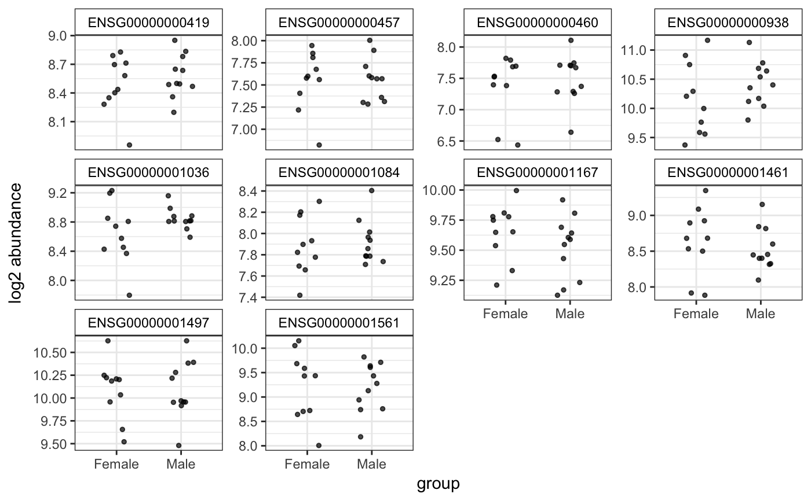
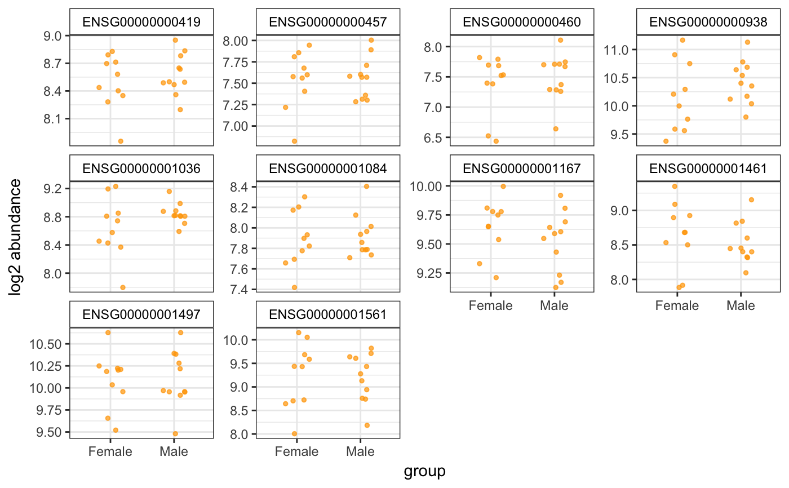
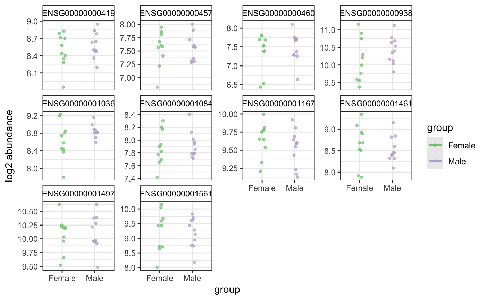

degPlot.RdPlot top genes allowing more variables to color and shape points
degPlot(dds, xs, res = NULL, n = 9, genes = NULL, group = NULL, batch = NULL, metadata = NULL, ann = c("geneID", "symbol"), slot = 1L, log2 = TRUE, xsLab = xs, ysLab = "abundance", color = "black", groupLab = group, batchLab = batch)
| dds | DESeq2::DESeqDataSet object or SummarizedExperiment
or Matrix or data.frame. In case of a DESeqDataSet object, always
the normalized expression will be used
from |
|---|---|
| xs | Character, colname in colData that will be used as X-axes. |
| res | DESeq2::DESeqResults object. |
| n | Integer number of genes to plot from the |
| genes | Character of gene names matching rownames of count data. |
| group | Character, colname in colData to color points and add different lines for each level. |
| batch | Character, colname in colData to shape points, normally used by batch effect visualization. |
| metadata | Metadata in case dds is a matrix. |
| ann | Columns in rowData (if available) used to print gene names. First
element in the vector is the column name in rowData that matches the
row.names of the |
| slot | Name of the slot to use to get count data. |
| log2 | Whether to apply or not log2 transformation. |
| xsLab | Character, alternative label for x-axis (default: same as xs) |
| ysLab | Character, alternative label for y-axis.. |
| color | Color to use to plot groups. It can be one color, or a palette
compatible with |
| groupLab | Character, alternative label for group (default: same as group). |
| batchLab | Character, alternative label for batch (default: same as batch). |
ggplot showing the expresison of the genes
data(humanGender) library(DESeq2) idx <- c(1:10, 75:85) dse <- DESeqDataSetFromMatrix(assays(humanGender)[[1]][1:1000, idx], colData(humanGender)[idx,], design=~group) dse <- DESeq(dse)#>#>#>#>#>#>#> #> #>#>#>#>#>#>#>#>#>